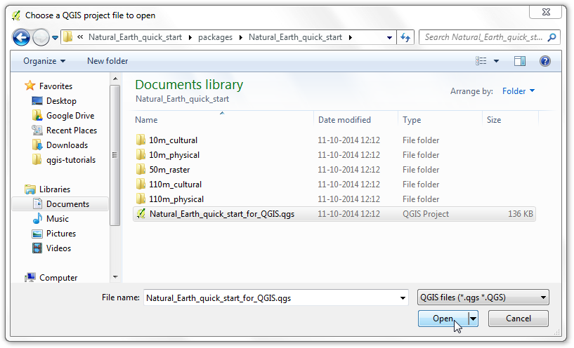
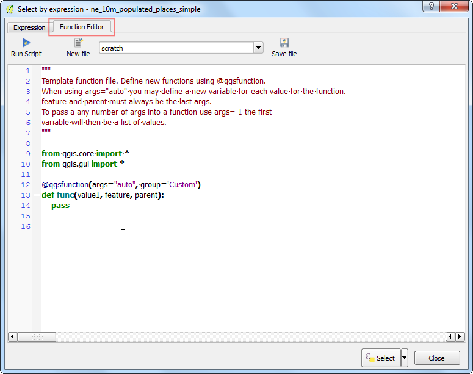

Χρήση προσαρμοσμένων εκφράσεων συναρτήσεων στην Python
Οι εντολές στο QGIS έχουν εξαιρετική δύναμη και χρησιμοποιούνται σε πολλά βασικά χαρακτηριστικά - επιλογή, υπολογισμός τιμών πεδίων, μορφοποίηση, ετικέτες κ.α. Το QGIS υποστηρίζει επίσης καθορισμένες από τον χρήστη εντολές. Με λίγο προγραμματισμό στην python, μπορείτε να καθορίσετε τις δικές σας συναρτήσεις οι οποίες μπορούν να χρησιμοποιηθούν μέσα στην μηχανή εντολών.
Επισκόπηση του έργου
Θα καθορίσουμε μια προσαρμοσένη συνάρτηση η οποία θα βρίσκει την χρονικη ζώνη UTM από ένα χαρακτηριστικό του χάρτη και θα χρησιμοποιεί αυτή την συνάρτηση για να γράψει μια εντολή η οποία θα εμφανίζει την χρονική ζώνη σαν μια πληροφορία στον χάρτη που θα εμφανίζεται όταν θα περνάει ο κέρσορας πάνω από το σημείο.
Άλλες δεξιότητες που θα μάθετε
Διαδικασία
Ανοίξτε το QGIS και πηγαίνετε στο .

Περιηγηθείτε στο μεταφορτωμένο αρχείο``ne_10m_populated_places_simple.zip`` και επιλέξτε Open.

Πηγαίνετε στο .

Πηγαίνετε στην καρτέλα Function Editor. Εδώ μπορείτε να γράψετε όποιον PyQGIS κώδικα θέλετε να εκτελεστεί από την μηχανή εντολών.

Θα καθορίσουμε μια προσαρμοσμένη συνάρτηση με όνομα GetUtmZone που θα υπολογίζει την χρονική ζώνη για το κάθε χαρακτηριστικό. Λαμβάνοντας πάντα υπόψιν οτι οι προσαρμοσμένες εκφράσεις στο QGIS λειτουργούν σε επίπεδο χαρακτηριστικών. Θα χρησιμοποιήσουμε το κεντροειδές από την γεωμετρία των χαρακτηριστικών για να υπολογίσουμε την χρονική ζώνη από το γεωγραφικό μήκος και πλάτος του κεντροειδούς της γεωμετρίας. Θα προσθέσουμε επίσης έναν χαρακτηρισμό “Β” ή “Ν” στην ζώνη ο οποίος θα υποδεικνύει αν η ζώνη είναι στο βόρειο ή νότιο ημισφαίρειο. Πληκτρολογίστε τον παρακάτω κώδικα στον επεξεργαστή , εισάγετε το όνομα του αρχείου ως utm_zones.py και πατήστε Αποθήκευση αρχείου.
Note
Οι χρονικές ζώνες είναι ζώνες προβολής κατά γεωγραφικό μήκος με αρίθμηση από το 1 ως το 60. Κάθε χρονική ζώνη έχει πλάτος 6 μοίρες. Εδώ θα χρησιμοποιήσουμε μια απλή μαθηματική εξίσωση για να βρούμε την κατάλληλη ζώνη για την δοσμένη τιμή του γεωγραφικού μήκους. Θυμηθείτε οτι αυτή η εξίσωση δεν καλύπτει μερικές ειδικές χρονικές ζώνες.
import math
from qgis.core import *
from qgis.gui import *
@qgsfunction(args=0, group='Custom')
def GetUtmZone(value1, feature, parent):
centroid = feature.geometry()
longitude = centroid.asPoint().x()
latitude = centroid.asPoint().y()
zone_number = math.floor(((longitude + 180) / 6) % 60) + 1
if latitude >= 0:
zone_letter = 'N'
else:
zone_letter = 'S'
return '%d%s' % (int(zone_number), zone_letter)

Πατήστε στο:guilabel:Run Script, Τρέξτε τον κώδικα. αυτό θα εκτελέσει τον κώδικα στην python και θα καταχωρίσει την συνάρτηση GetUtmZone χρησιμοποιώντας την μηχανή εντολών. Θυμηθείτε οτι αυτό θα χρειαστεί να το κάνετε μόνο μία φορά. Μόλις η συνάρτηση καταχωρηθεί, θα είναι πάντα διαθέσιμη μέσα στην μηχανή εντολών.

Μεταφερθείτε στην καρτέλα Expression στο παράθυρο διαλόγου Select by expression. Βρείτε και επεκτείνετε την ομάδα:guilabel:Custom στο τμήμα Functions. Τώρα θα παρατηρήσετε οτι μια καινούρια προσαρμοσμένη συνάρτηση, η $GetUtmZone υπάρχει μέσα στην λίστα. Τώρα μπορούμε να χρησιμοποιήσουμε αυτή την συνάρτηση μέσα σε εντολή, όπως κάθε άλλη συνάρτηση. πληκτρολογήστε την παρακάτω εντολή στον επεξεργαστή. Αυτή η εντολή θα επιλέξει όλα τα σημεία τα οποία βρίσκονται μέσα στην χρονική ζώνη 40N. Πατήστε Select.

Πίσω στο κύριο παράθυρο του QGIS, θα δείτε πολλά σημεία με κίτρινο χρώμα. Αυτά είναι τα σημεία που πέφτουν μέσα στην χρονική ζώνη που καθορίζεται από τις εντολές.

Είδατε πως καθορίσαμε και χρησιμοποιήσαμε μια προσαρμοσμένη συνάρτηση για να επιλέξουμε χαρακτηριστικά μέσω εντολών. Θα χρησιμοποιήσουμε τώρα την ίδια συνάρτηση για κάτι διαφορετικό. Ένα κρυφό διαμάντι στο QGIS είναι το εργαλείο Map Tip. Αυτό το εργαλείο δείχνει καθορισμένο από τον χρήστη κείμενο όταν περάσετε τον κέρσορα πάνω από ένα χαρακτηριστικό. κάντε δεξί κλικ στο στρώμα ``ne_10m_populated_places_simple``και επιλέξτε Ιδιότητες.

Μετακινηθείτε στην καρτέλα Display και επιλέξτε HTML. Εδώ μπορείτε να προσθέσετε όποιοδήποτε κειμενο θέλετε να εμφανίζεται όταν περνάτε τον κέρσορα πάνω από το χαρακτηριστικό στο στρώμα. Ακόμα καλύτερα, μπορείτε να χρησιμοποιήσετε τις τιμές του πεδίου και τις εντολές του στρώματος για να εισάγετε ένα πιο χρήσιμο μήνυμα. Κάντε κλικ στο κουμπί Click on the Insert expression, Προσθήκη εντολής... button.

Θα δείτε την γνωστή εντολή στον επεξεργαστή πάλι. Θα χρησιμοποιήσουμε τώρα την συνάρτηση concat για να ενώσουμε την τιμή με το πεδίο “όνομα” και το αποτέλεσμα από την προσαρμοσμένη συνάρτηση $GetUtmZone. Εισάγετε τις παρακάτω εντολές και πατήστε OK.
concat("name", ' | UTM Zone: ', $GetUtmZone)

Τώρα θα δείτε την εντολή να έχει εισαχθεί σαν την τιμή του κειμένου Display . Πατήστε OK.

Προτού συνεχίσουμε, ας αποεπιλέξουμε τα χαρακτηριστικά τα οποία είχαν επιλεχθεί από το προηγούμενο βήμα. Πηγαίνετε στο .

Ενεργοποιήστε το εργαλείο Map Tips πηγαίνωντας στο .

Μεγενθύνετε οπουδήποτε μέσα στον χάρτη και μετακινήστε τον κέρσορα του ποντικιού σας πάνω από κάποιο χαρακτηριστικό. Θα δείτε το όνομα της πόλης και την αντίστοιχη χρονική ζώνη να εμφανίζεται στις πληροφορίες.